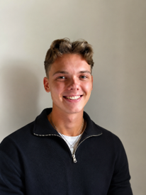

Jeg ser en proces, finder tallene, og bygger løsningen.
Økonomi & IT-studerende på Erhvervsakademi København, 4. semester. Her er de projekter, jeg har lavet med virksomheder som Røde Kors, Norlys, Politiken og ista.
Sådan arbejder jeg. Vælg et trin for at se de projekter, hvor jeg har brugt det.
Udvalgte projekter
Alle projekter er lavet i grupper på 5–6 studerende i samarbejde med rigtige virksomheder. Jeg har været med i alle faser. Under hvert projekt står de dele, jeg især har arbejdet med.
Fremhævet projekt
Røde Kors: salgsoverblik til frivillige butikker
Røde Kors: salgsoverblik til frivillige butikker
- Udfordringen
- Røde Kors' webshop omsætter for over 2,4 mio. kr. om året, men de 267 butikker kunne kun se deres samlede månedsomsætning. De vidste ikke, hvilke varer der solgte bedst, og kunne ikke sammenligne sig med hinanden.
- Det gjorde vi
-
- Kortlagde den nuværende webshopproces fra donation til levering i BPMN og fandt, hvor den skaber værdi og spild.
- Tegnede dataflowet før og efter løsningen (DFD as-is og to-be).
- Byggede et Power Automate-flow, der henter salgsdata fra Shopify, og en app i Power Apps, hvor man vælger butik og periode og ser omsætning, antal solgte varer, diagrammer og bestsellere.
- Planlagde kvalitetssikring med rollebaseret adgang, validering af data mod Shopify og brugertest med frivillige.
- Mit fokus
- BPMN-analysen, dataflowdiagrammerne og selve løsningen i Power Automate og Power Apps.
- Resultat
- En fungerende løsning, som vi demonstrerede for Røde Kors. Den gør rå salgstal til et overblik, som frivillige uden teknisk baggrund kan bruge.
- Værktøjer
- Power Apps
- Power Automate
- Shopify
- BPMN
- DFD
ista: AI-agent til montører
ista: AI-agent til montører
- Udfordringen
- ista's tekniske viden ligger spredt i dokumentation, og montørerne har brug for den rigtige vejledning, mens de står med opgaven, gerne uden at bruge hænderne.
- Det gjorde vi
-
- Analyserede ista's forretningsmodel og hvor langt de er fra digitalisering til egentlig digital transformation.
- Designede et dataflow: godkendte manualer i SharePoint, et revisionsmodul med version og ejer, en Copilot-agent der svarer montøren, og et dashboard med brug og feedback.
- Byggede en kontrolmekanisme ind, hvor uklare spørgsmål sendes videre til en fagperson (human-in-the-loop).
- Afgrænsede prototypen til én målertype og ét installationsflow.
- Mit fokus
- Dataflowet fra dokumentation til agent og dashboard.
- Resultat
- Et afgrænset koncept med klare hypoteser, som prototypen skal teste i næste fase.
- Værktøjer
- Microsoft Copilot
- SharePoint
- Power Platform
- Digital transformation
Norlys: trivselsværktøj til sælgere
Norlys: trivselsværktøj til sælgere
- Udfordringen
- Sælgerne hos Norlys arbejder i op til fem systemer pr. kunde. Det gør salget langsomt og skaber stress, og der fandtes ikke et værktøj til at følge trivslen løbende.
- Det gjorde vi
-
- Designede en tilføjelse, der kan indlejres uden at røre Norlys' igangværende systemintegration: daglig trivselsevaluering, salgsråd, kontakt til kolleger og besked til lederen ved stress.
- Lagde et budget for udvikling, GDPR-rådgivning, kurser, pilottest og drift.
- Beregnede, hvad én stresssygemelding koster pr. måned i sygedagpenge og tabt salg.
- Byggede en klikbar prototype i Figma og pitchede løsningen.
- Mit fokus
- Budgettet og beregningen af, hvad stress koster virksomheden.
- Resultat
- 443.500 kr. i engangsinvestering og ca. 39.000 kr. om året i drift, sat over for et estimeret tab på 109.460 kr. for hver måned en sælger er sygemeldt med stress.
- Værktøjer
- Business case
- Budgettering
- Figma
- Supabase
- GDPR/DPIA
Satair: hurtigere svar på supporthenvendelser
Satair: hurtigere svar på supporthenvendelser
- Udfordringen
- Mange af Satairs supporthenvendelser manglede vigtige oplysninger. Det gav forsinkelser, også når et fly stod stille på jorden og ventede på en reservedel.
- Det gjorde vi
-
- Sammenlignede en integreret kontaktformular med Hotjar-surveys og valgte formularen, fordi den giver bedre data og kobler direkte til Freshdesk.
- Lavede en cost-benefit-analyse ved forskellige grader af forbedring.
- Planlagde udviklingen med en work breakdown structure.
- Mit fokus
- Cost-benefit-analysen.
- Resultat
- 184,8 % ROI ved blot 2 % forbedring, og over 2.000 % ved 15 %. Løsningen blev ikke afprøvet i praksis, så tallene er estimater.
- Værktøjer
- Cost-benefit-analyse
- WBS
- Freshdesk
- Hotjar
Politiken Pulse: yngre læsere og digital modenhed
Politiken Pulse: yngre læsere og digital modenhed
- Udfordringen
- Unge mangler hverken interesse for nyheder eller betalingsvilje, men Politikens digitale tilbud matcher ikke deres forventninger til fællesskab, personalisering og anonymitet.
- Det gjorde vi
-
- Vurderede Politikens modenhed inden for data og analytics med Kræmmergaards modenhedstrappe og placerede dem i generation 4.
- Udviklede Politiken Pulse, et debat- og communityunivers på Politiken.dk, gennem en Design Thinking-proces.
- Lavede skærmbilleder i Figma Make og beskrev, hvordan konceptet kan bygge på Politikens eksisterende datainfrastruktur.
- Analyserede implementering og drift i den nye organisation efter omstruktureringen i 2026.
- Resultat
- En anbefaling om, at den største opgave er at bygge en ny brugeroplevelse oven på eksisterende systemer, ikke at bygge datafundamentet fra bunden.
- Værktøjer
- Design Thinking
- Kræmmergaards modenhedstrappe
- Figma Make
- Konsulentrapport
Peytz: integration efter et opkøb
Peytz: integration efter et opkøb
- Udfordringen
- Efter opkøbet havde Peytz spredte systemer, kulturforskelle og en integration, der var sat på pause. Det skabte usikkerhed blandt medarbejderne.
- Det gjorde vi
-
- Fandt organisatoriske skævheder med McKinsey 7S.
- Vurderede videndeling med Knowledge Management Maturity Model.
- Brugte Kotters 8 trin til at vurdere forandringsprocessen.
- Testede API-kald til Jira i Postman som proof of concept.
- Resultat
- Integrationen var teknisk mulig. De største barrierer var organisatoriske: styring, fælles platforme, dokumentationsstandarder og kommunikation.
- Værktøjer
- Postman
- Jira API
- McKinsey 7S
- KMMM
- Kotter
DR Daglig: hackathon
DR Daglig: hackathon
- Udfordringen
- DR vil nå halvdelen af danskerne digitalt hver dag, men når ikke de unge på de platforme, de bruger dagligt.
- Det gjorde vi
-
- Valgte 15–24-årige, der sjældent bruger DR, som primær målgruppe.
- Udviklede DR Daglig: korte, personaliserede klip, en daglig notifikation og en vej fra TikTok og Instagram ind til DR's egne platforme.
- Beskrev brugerrejsen og koblede konceptet til DR's tre strategiske mål med konkrete KPI'er.
- Værktøjer
- Brugerrejse
- Målgruppeanalyse
- KPI'er
Øvrige projekter

Om mig
Jeg læser Økonomi & IT på Erhvervsakademi København og søger praktik og studiejob inden for økonomi, data eller IT.
Ved siden af studiet har jeg flere års erfaring med kundeservice, salg og administration. Det har lært mig at forstå, hvad folk faktisk har brug for, før man bygger en løsning til dem.
Kompetencer
- Excel
- SQL
- Power BI
- Power Automate
- Power Apps
- HTML & CSS
- C (grundlæggende)
- BPMN
Sprog
Dansk (modersmål), engelsk og tysk (professionelt niveau)
Erfaring
- Dypång Management2024–2026. Administration, koordinering og kundekontakt
- Nielsens Herretøj2024. Salg, kunderådgivning og lageransvar
- Hvidbjerg Strand Feriepark2023. Reception, booking og kasseansvar
- Tøjeksperten2021–2022. Salg og kunderådgivning
- Bilka og Hvidbjerg Strand Feriepark2019–2021. Service og kundehåndtering
Søger du en praktikant eller studentermedhjælper?
Skriv til mig, så sender jeg gerne mit CV.